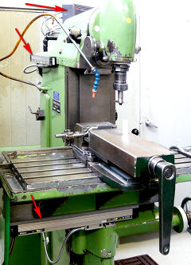
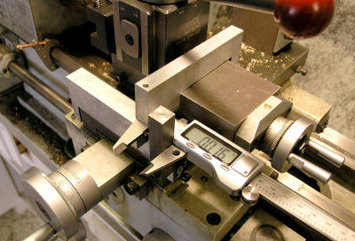
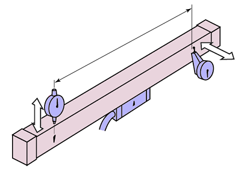
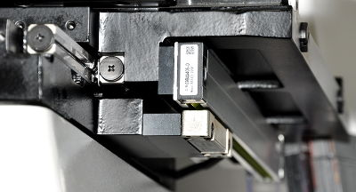

Příklady nasazení
BMD
Svislá frézka, 2 osy.
Dodatečná digitalizace
Obecné vlastnosti
Dodatečná digitalizace znamená dovybavení zpravidla starších obráběcích strojů s manuálním ovládáním číslicovým odměřovacím systémem. Dodatečná montáž odměřovacího zařízení nijak nezasahuje do ovládání či pohonů stroje a je poměrně jednoduše realizovatelná i svépomocným způsobem. Přínos dosažený digitalizací je přitom nesporný. Projevuje se:
- Zjednodušením obsluhy stroje
- Vyloučení četných průběžných měření manuálními měřidly
- Znatelným zvýšením produktivita práce (uplatněním předchozích bodů)
- Snížením zmetkovitosti
Dodatečná digitalizace se realizuje jako dvojosá (frézky, soustruh, bruska), případně tříosá (frézky).
Potřebný počet os je třeba dobře zvážit, změna dvouosého systému na tříosý znamená výměnu hlavní jednotky (čítače).
Dvouosý systém je možné realizovat i se sčítanou osou, kde jsou údaje pro tuto složenou osu získávány za dvou stejně orientovaných odměřovacích pravítek. Pro takovýto systém je třeba mít rovněž 3-osý čítač.

Soustruh - příklad realizace amatérského odměřování na posuvu držáku nožů.
Umístěním pravítka na toto místo + druhého pravítka na podélný posuv představuje klasický příklad systému se sčítanou osou Z1 + Z2. Pro realizaci je třeba mít 3-osý čítač, třetím pravítkem je pravítko X na příčném posuvu.
Rozlišovací schopnost a přesnost
Dosahovaná rozlišovací schopnost digitálního systému je 0,1 µm, přesnost kolem 5 µm v závislosti na parametrech pravítka. Konkrétnější údaje najdete v typových katalozích.
Oby tato údaje zpravidla daleko přesahují rozlišovací schopnost (=nejmenší definovatelný a reprodukovatelný krok nástrojem) a přesnost řesnost stroje.
Přesnost stroje je nadále základním prvkem v souvislosti s dosahovanou přesností výroby.
Rozdíl mezi rozlišovací schopností a přesností
Rozlišovací schopnost je schopnost detekovat elementární pohyb. Pravítka pro DRO jsou schopny jako „pulz“ detekovat pohyb již 0,1 µm. Většinou není žádoucí zobrazovat tyto údaje na čtvrtém desetinném místě, protože jsou ovlivněny chvěním a v praxi jsou nic neříkající, protože tato přesnost je zcela "pohlcena" vůlemi a tuhostí stroje.
Přesnost je veličina, která určuje, jak nepřesná může být odměřená vzdálenost vzhledem délkovému normálu. Proto se údaj o přesnosti zpravidla vztahuje i měřené délce, např. 5 + 5L/1000 [µm]. Pro odměřenou vzdálenost 3 m to tedy bude 5 + 5(5000/1000) = 30 µm.
Odměřovací pravítka
Preferovaným typem odměřovacích pravítek je AT-715. Výhoda Absolute systému (pamatuje si polohu i po ztrátě napájení, nehrozí ztráta kroku), skvělé odolnosti proti znečistění díky krytí IP65 a dostatečné tuhosti předurčují tento typ jako ideální pro DRO systémy.
Pouze v případech, kdy je potřeba odměřovat při vysokých rychlostech (nad 50 m/min = 0,8 m/s ) nebo je potřeba pravítko delší než 3 m či jiných speciálních situacích je nezbytné použít inkrementální optická pravítka (AT-103 aj.).
Více o jednotlivých typech pravítek pro DRO na stránce Systémy pro DRO.
Montáž
Základní podmínky pro montáž jsou následující:
-
Hlava pravítka nesmí po namontování za provozu nikdy narazit na konec pravítka. Tento požadavek je důležitý při volbě délky pravítka, která by se vždy měla určovat z mezního rozsahu pohybu v příslušné ose. Kvůli zabránění dojezdu na konec je katalogová efektivní délka pravítka menší než rozsah pohybu jezdce. Rozdíl je 30-40 mm, je počítáno s rezervou min 15 mm na každé straně.
Při volbě délky je třeba vybrat pravítko s efektivním rozsahem stejným nebo větším než je mezní rozsah možného pohybu dílů stroje.
-
Po namontování se musí hlava pravítka pohybovat vůči tělu pravítka paralelně. Zároveň musí být dodržena předepsaná vzdálenost mezi hlavou a pravítkem a to v celém rozsahu pohybu hlavy vůči tělu pravítka. K vymezení této vzdálenosti slouží mj. k pravítku dodané distanční podložky.

Maximální vodorovná i svislá úchylka rovnoběžnosti na celém rozsahu pohybu by neměla překročit 0,2 mm. -
Spára pro pojezd hlavy musí být orientována tak, aby bylo v co největší míře zabráněno možné vnikání nečistot či kapalin do vnitřního prostoru pravítka. Obvyklá je orientace této spáry (tím pádem i hlavy) směrem dolů.
-
Na těleso pravítka a hlavu nesmí působit žádná vnější síla a nesmí být vystaveno nárazům (pádu upíchnutého obrobku atd.). Pokud by taková možnost přicházela v úvahu, musí být pravítko chráněno krytem.
Více o zásadách montáže v příslušném katalogu.

Příklad montáže na profesionálně dodávaném stroji. Hlava je na pevné části stroje, pravítko na pohyblivém stole.